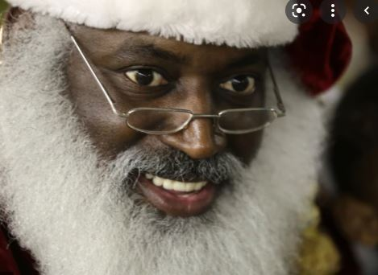

Mussum Ipsum, cacilds vidis litro abertis. Admodum accumsan disputationi eu sit. Vide electram sadipscing et per. Tá deprimidis, eu conheço uma cachacis que pode alegrar sua vidis. Suco de cevadiss, é um leite divinis, qui tem lupuliz, matis, aguis e fermentis. Todo mundo vê os porris que eu tomo, mas ninguém vê os tombis que eu levo!
Nec orci ornare consequat. Praesent lacinia ultrices consectetur. Sed non ipsum felis. Quem num gosta di mim que vai caçá sua turmis! Delegadis gente finis, bibendum egestas augue arcu ut est. Paisis, filhis, espiritis santis.
Interessantiss quisso pudia ce receita de bolis, mais bolis eu num gostis. In elementis mé pra quem é amistosis quis leo. Copo furadis é disculpa de bebadis, arcu quam euismod magna. Posuere libero varius. Nullam a nisl ut ante blandit hendrerit. Aenean sit amet nisi.
